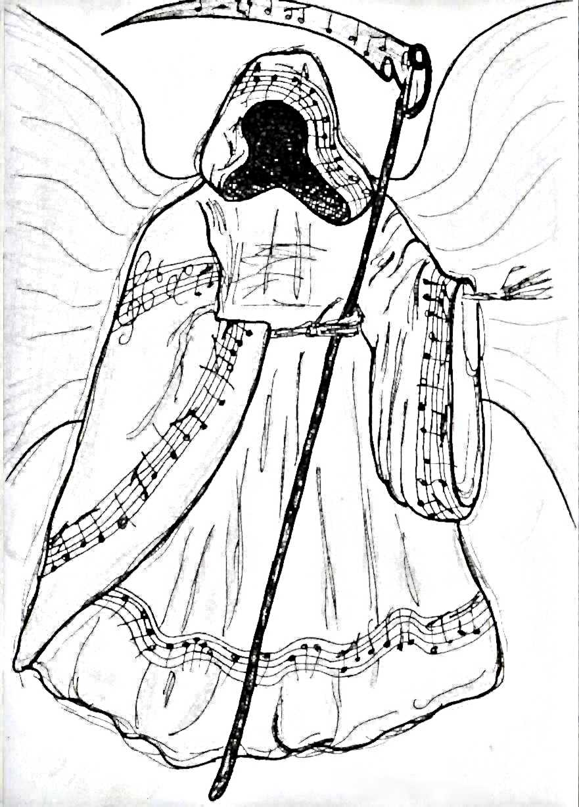

« předchozí článek | obsah čísla | následující článek »
Kouzelné tóny ovládaly mou mysl. Melodramatická hudba zněla v mých uších příliš tesklivě a smutně. Naprosto jsem se nechala unést požitkem z této nádherné skladby. Oči jsem měla zavřené a plně jsem se soustředila na tóninu, kterou jsem musela odehrát. Prsty mi běhaly po klapkách klavíru, jako bych je snad neovlivňovala já, ale samy věděly, co mají hrát. Když mě náhle z mého mystického opojení vytrhlo až agresivní třískání dirigentskou taktovkou o kovový stojan. Otevřela jsem oči a přestala hrát. Celý náš symfonický orchestr utichl a otráveně vzhlédl k našemu nervnímu dirigentovi, panu Luziánovi, kterému ale nikdo neřekl jinak, než Nervák. Svou cholerickou povahou byl pověstný, i nepatrná maličkost ho dokázala rozzuřit. Nicméně ve své profesi neměl téměř konkurenci. Nikdo si nedovolil se na něj osopit, jinak by přišel o místo.
„Ne, ne, ne! Ido,“ křikl na mě, „ ve druhé části je e-dur, ne c-dur, rozumíš? Takže se vrať zpátky na zem a zahraj to tak, jak to má být. A ty, Patriku, můžeš mi říct, co to mělo být? Když řeknu vyšší tón, tak tím nemyslím medvědí brumlání. A drž pořádně ty housle. Držíš je, jakoby tě měly kousnout. Takhle z vás nic nebude!“ řval a vztekal se jako malé děcko. „Za pár dnů je premiéra, a jestli někdo něco posere, vyhodím ho! Rozumíte?“ rozlíceně prsknul. Prohrábl si pár prošedivělých vlasů a pokoušel se uklidnit. S lidmi v orchestru jsme si věnovali znuděné výrazy. Zkoušeli jsme od rána, a už byl skoro večer. „Dneska končíme. Nemám na vás nervy! Vypadněte!“
„To zas byl den, co,“ přistoupila ke mně kamarádka Elena. Drobná blondýnka, která ale hrála na cello jako ďábel.
„Já už ty jeho nálady ani nevnímám. Zvykla jsem si na ně. Tak co, těšíš se na premiéru? Já jsem nervózní už teď,“ vyhrkla jsem, abych změnila téma.
„Já ani ne. To přijde až v ten den. Zase mi bude špatně,“ zasmála se.
„Holky, jdete s námi? Jdeme na panáka,“ pozval nás flétnista Lukáš. Sympatický kluk. V souboru jsem se všema vycházela. Byli jsme dobrá parta, až na pár výjimek, které si o sobě myslely, bůhví jak nejsou úžasné.
„Ne, díky. Potřebujeme něco probrat,“ odbyla ho Elena a pohlédla na mě. Očekávala můj tichý souhlas. Zmateně jsem přikývla. Lukáš nás nepřemlouval. Mávl rukou a s ostatníma odešel do místního baru, kam jsme po zkouškách chodívali.
Jakmile opustili divadlo i poslední herci, zůstaly jsme v něm jen my dvě a uklízečky. Společně jsme vyšly na jeviště a dělaly kraviny s kulisami. Kdyby nás viděl režisér inscenace, asi by nás vyhodil. S Elenou jsme byly skoro jako sestry. Poznaly jsme se na konzervatoři. Zjistily jsme, že jsme se obě původně hlásily na herectví, ale pro velký zájem a taky kvůli nedostatku talentu nás ani jednu nevzali. Nakonec jsme skončily v orchestru. Já hraju na klavír, ona na cello. Když jsme se pořádně vyřádily a uklízečky nás dostatečně seřvaly, že se máme uklidnit, sedly jsme si na okraj jeviště a povídaly si. Domů se nám nechtělo.
„Co tvůj táta? Pracuje teď na něčem?“ zeptala jsem se jí.
Její táta byl známý hudební skladatel. Celá jejich rodina byla hudebně založená. Otec skladatel, matka zpěvačka, dcera cellistka. Zatím co se týče naší rodiny, mám hudební sluch jenom já.
„Jo, teď píše devátou symfonii,“ překvapila mě a upila z láhve pivo.
„Devátou symfonii?“ zopakovala jsem nevěřícně. „Víš, co se o nich říká?“
„Ne, co?“
„Mezi muzikanty se povídá, že devátá symfonie je prokletá. Skladatelé při jejím psaní umřeli,“ vysvětlila jsem jí.
„Ale prosím tě,“ poklepala mi na rameno. „Přece bys takovým kravinám nevěřila,“ vysmála se mi. Udivena mou paranoiou nechápavě zakroutila hlavou.
„Ovšemže ne,“ zalhala jsem. „Jen mě to napadlo,“ usmála jsem se nejistě.
„Píše ji už dlouho. Pomalu se blíží k jejímu závěru a dosud se mu nic nestalo,“ ujišťovala mě a pobaveně se uchechtla.
Nebyla jsem nijak pověrčivá, ale zase jsem to nebrala na lehkou váhu. Mezi námi hudebníky a herci se někdy pověry berou dost vážně. Měla jsem chuť se o tom dál bavit, ale jakmile jsem viděla její pesimistický přístup, raději jsem mlčela. Nechtěla jsem ji strašit nebo v ní vyvolávat nesmyslné obavy. Přesto jsem chtěla něco namítnout, když v tu chvíli se v orchestřišti samy od sebe rozezněly činely. Takovým způsobem, jako by do nich někdo narazil. Obě jsme se lekly. Podívaly jsme se dolů, kde nástroje nehnutě stály.
„Asi o ně zavadila uklízečka,“ hlesla sebejistě Elena. „Snad se nebojíš,“ dobírala si mě pobaveně. Divadlo bývá večer dost děsivé. Rozhlédla jsem se po hledišti a možná vlastním strachem nebo bujnou představivostí mě zamrazilo.
„Ne,“ odvětila jsem lživě. Byla jsem si jistá, že uklízečka to být nemohla. Než se ozval ten zvuk, viděla jsem ji odtamtud odcházet. Elena si jí nejspíš nevšimla. Nebo možná všimla, ale chtěla působit reálně a nepřipouštět si nic nadpřirozeného. Nějaký čas na to jsme musely divadlo opustit i my. Uklízečky se také chystaly domů.
„Tak zítra. A prosím tě, přestaň být pověrčivá, jo?“ neopomněla si do mě rýpnout, když jsme se loučily. Bylo jedenáct večer, a já už byla dost unavená.
„Jasně, neměj péči,“ ujistila jsem ji, neboť jsem chtěla mít klid od jejích posměšků. Připadala jsem si jako malé dítě, kterému rozmlouvají, že pohádky nejsou pravdivé a ve skutečnosti jsou pouze výplodem fantazie.
Večer jsem nad tím ještě přemýšlela. Nevěděla jsem, proč mi to nejde z hlavy. Po chvilce jsem usnula, a pokoušela se na to nemyslet.
Následující den jsem jako obvykle v devět ráno mířila do divadla. Zaparkovala jsem u zadního vchodu, a už při příjezdu se mě zmocňoval nepochopitelný pocit úzkosti. Jakoby mi něco našeptávalo, abych tam dnes nechodila. Dala jsem však na Elenina slova a paranoidní pocity jsem ignorovala. U šaten jsem spatřila hlouček našich lidí, kteří se tvářili vážně, až smutně. Jakmile mě spatřili, obrátili se na mě. Jejich pohledy mi nebyly příjemné. Raději jsem zamířila ke své skříňce. Bylo mi divné, že jsem nikde nezahlédla Elenu. Většinou tu bývává brzy. Její zpoždění jsem přisuzovala nejspíš dopravní zácpě, nebo zaspání. Chystala jsem se usednout ke klavíru, když ke mně došel Lukáš. Jeho posmutnělý obličej mě zarazil.
„Co se děje? Proč se všichni tváříte tak nešťastně?“ otázala jsem se, neboť jsem měla dost toho napjatého ticha a mlčenlivosti.
„Ty to nevíš?“ podivil se. „Elenin táta,“ započal a polknul. Odmlčel se. Ohlédl se na ostatní a váhavě těkal očima kol sebe.
„Co je s Eleniným tátou?“ naléhala jsem.
„Včera dostal infarkt a dnes ráno zemřel. Nikdo si to nedokáže vysvětlit. Byl příliš mladý na infarkt. Navíc, byl prý naprosto zdravý. Žádné problémy se srdcem neměl,“ vypověděl Lukáš přerývaně. „Elena a její máma se z toho zhroutily. Skončily na psychiatrii.“
V tu chvíli by se ve mně krve nedořezal. Cítila jsem, jak blednu. Špatně se mi dýchalo, hlava se mi točila. Vytvářely se mi mžitky před očima. Lapala jsem po dechu.
„Je ti dobře? Mám ti přinést vodu?“ strachoval se Lukáš, ale já ho vůbec nevnímala. Mlčky jsem ho odstrčila. Jako mátoha jsem doklopýtala na jeviště a vložila obličej do dlaní. Posadila jsem se přesně tam, kde jsme včera seděly s Elenou. Nedokázala jsem pochopit, jak je to možné. Cítila jsem se provinile. V mysli jsem si představovala neviditelné hlasy, které se mi tiše vysmívaly. Vyděšeně jsem vstala a rozhlédla se kolem sebe. Nabyla jsem nepříjemného pocitu, že včerejší mrazivý tón činel ohlašoval smutnou událost. Opravdu jsem byla svědkem něčeho nadpřirozeného, nebo je to jen děsivá náhoda? A co ona devátá symfonie, kterou její otec psal? Stejně jako tomu bylo u ostatních, ani tato nebude dopsána. Dostála snad své pověsti a má na svědomí další život? Stalo by se to, i kdybych to nepřipomněla? Nebo se Eleně vymstila její odtažitá lehkomyslnost? Nemohla jsem se nikomu svěřit, a přesto se mi chtělo nesmyslně křičet a omlouvat se. Obávala jsem se však, že by mi to stejně nikdo neuvěřil. Odmítala jsem si připustit, že včerejší rozhovor byl předzvěstí blízké smrti. Dalo se jí však zabránit, nebo si kletba devátých symfonií opět vybrala další oběť?
